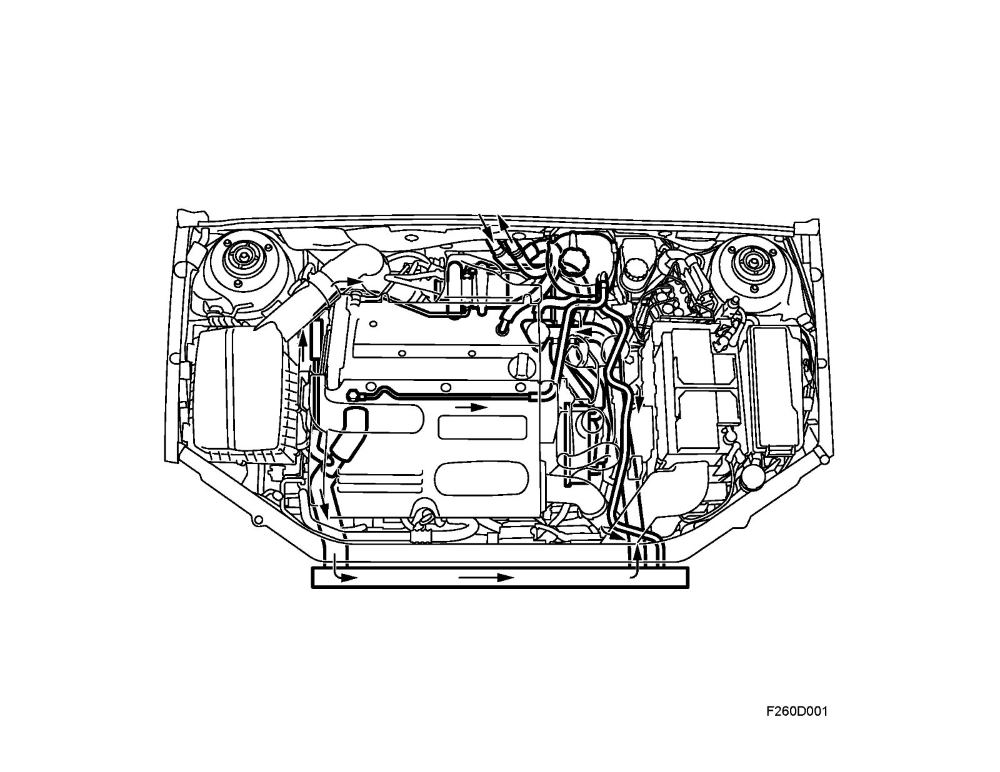
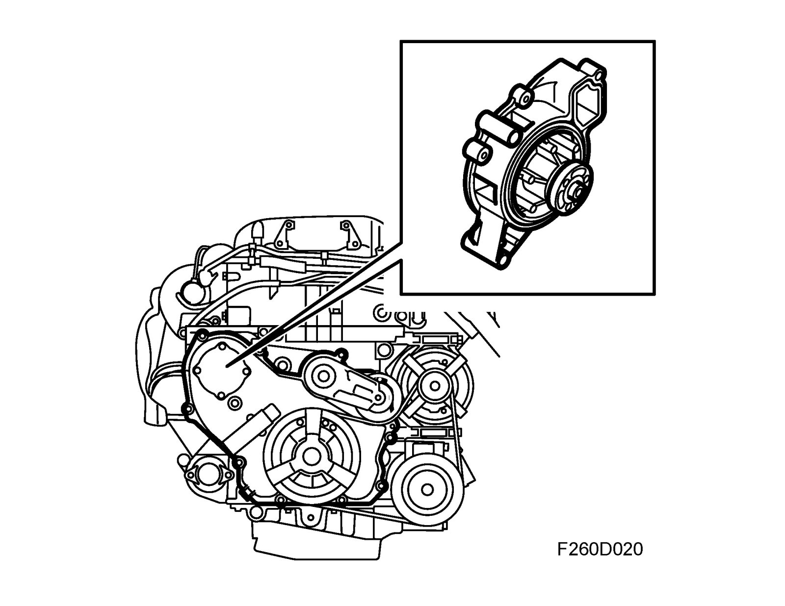
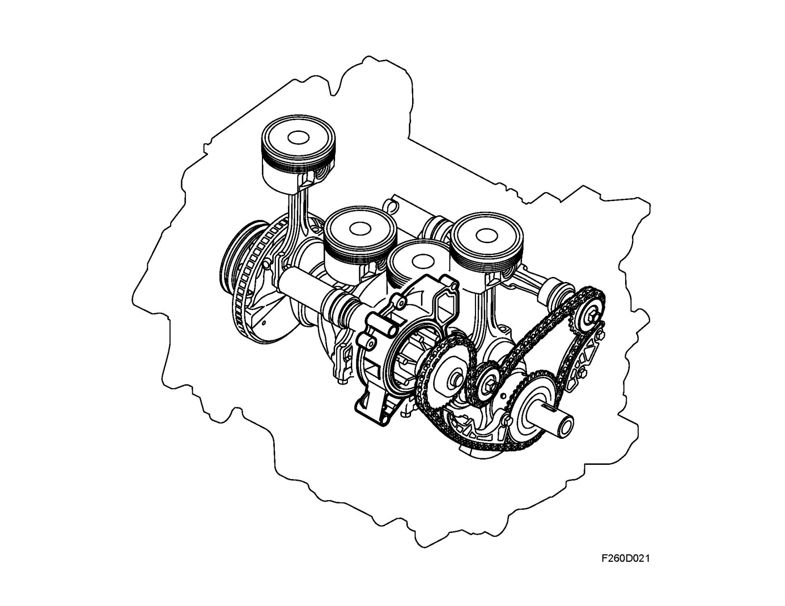
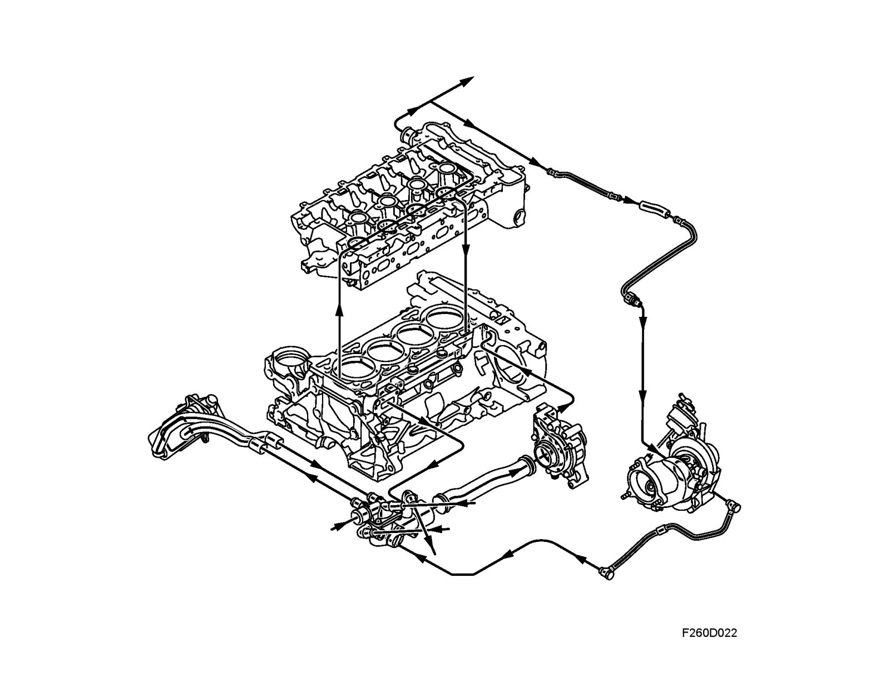

Brief Description, Cooling System
Brief description, cooling systemDescription
The cooling system is the pressurized type with crossflow radiator and expansion tank. The cooling system includes engine oil cooling, turbocharger cooling and automatic transmission fluid cooling.

The centrifugal coolant pump is located on the left-hand side of the engine and is driven by the crankshaft via the balancer shaft chain circuit.

The coolant pump sprocket also serves as an idler wheel for the balancer shaft chain. This is to get the balancer shafts to rotate in opposite directions.
Important
It is normal for a very small amount of coolant to pass via the coolant pump shaft seal in order to lubricate it.

The traditional wax-type thermostat is located on the inlet side in a housing mounted on the lefthand side of the engine. The housing contains a blank plug that covers a hole where an electric block heater can be fitted. The thermostat is mounted on the return side of the coolant circuit, which helps heat the engine and reduces cyclic variations in the coolant temperature. It starts to open at 80°C and is fully open at 95°C. The opening stroke is 9mm. The expansion tank is located on the left-hand side of the engine bay and is connected to the thermostat housing, to the top left of the radiator and to the highest point on the cylinder head. The latter connections are used to ventilate the cooling system. The coolant filler cap includes an integrated safety valve that opens at 1.4 bar. When the engine is turned off, the coolant in the turbocharger will circulate in the opposite direction than when the engine is running. This is achieved with the thermo-siphon principle.

The car is equipped with electric radiator fans that are located behind the radiator. These fans can be run at 4 different speeds and are controlled by ECM.